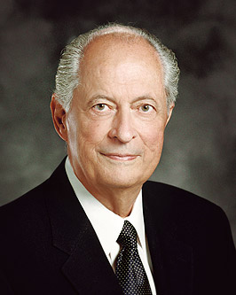

-- Featured Profile --
Emma Larsen
From Sandy, UT, Age: 24
Served in the California, San Diego Mission 2012-2014
You know that person in your group of friends who is always planning something but maybe gets a little too crazy about it sometimes? Well, that’s me. I’m an event planner by trade and love everything about it. Putting together experiences for people is great, but I like to create my own too! Perfect dates are going for a hike, followed by a visit to the new local restaurant or taking a walk around town. I work hard during the week, fill my weekends with activities, and definitely can be a big ball of energy at times. I’m looking for a guy who loves Christ and loves living life to the fullest.
Dating Quote of the Day:

"The track that leads to marriage passes through the terrain called dating!
Dating is the opportunity for lengthy conversations. When you date, learn
everything you can about each other. Get to know each other’s families when
possible. Are your goals compatible? Do you share the same feelings about
the commandments, the Savior, the priesthood, the temple, parenting, callings
in the Church, and serving others?"
- Elder Robert D. Hales, October 2010 General Conference